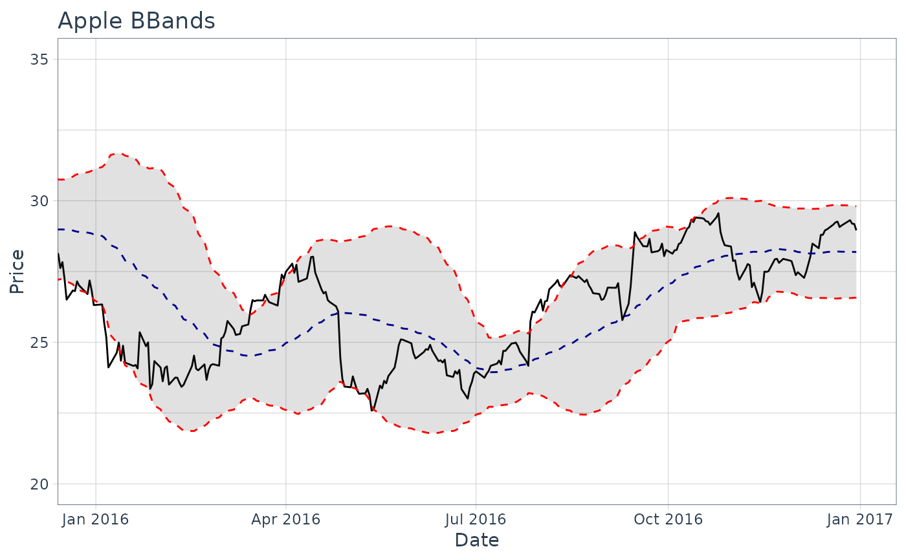

The theme_tq() function creates a custom theme using tidyquant colors.
Usage
theme_tq(base_size = 11, base_family = "")
theme_tq_dark(base_size = 11, base_family = "")
theme_tq_green(base_size = 11, base_family = "")Examples
# Load libraries
library(dplyr)
library(ggplot2)
# Get stock prices
AAPL <- tq_get("AAPL", from = "2013-01-01", to = "2016-12-31")
# Plot using ggplot with theme_tq
AAPL %>% ggplot(aes(x = date, y = close)) +
geom_line() +
geom_bbands(aes(high = high, low = low, close = close),
ma_fun = EMA,
wilder = TRUE,
ratio = NULL,
n = 50) +
coord_x_date(xlim = c("2016-01-01", "2016-12-31"),
ylim = c(20, 35)) +
labs(title = "Apple BBands",
x = "Date",
y = "Price") +
theme_tq()
